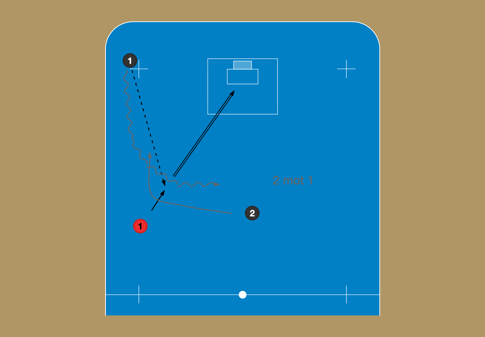
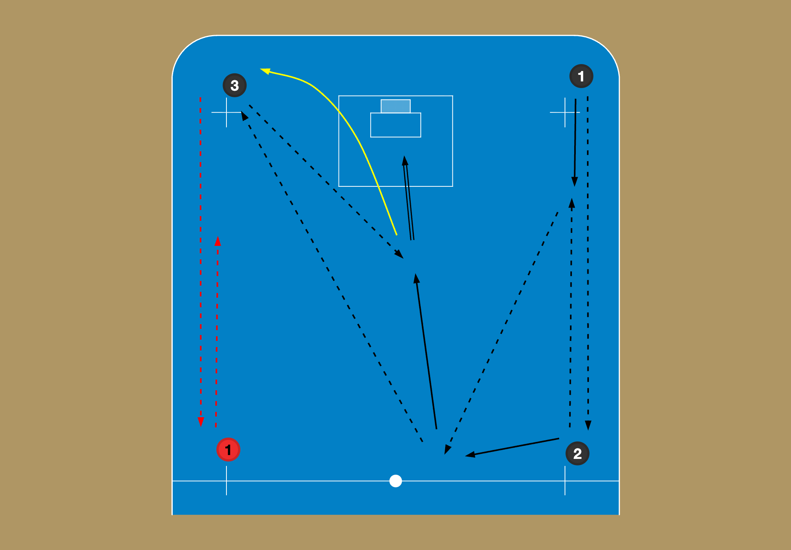
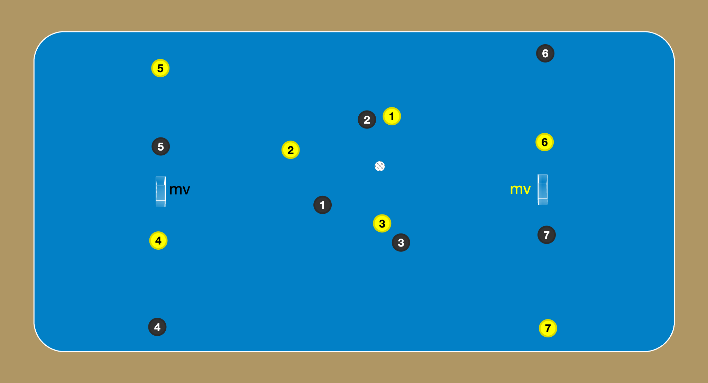

Alla övningar
- 2 mot 1 – från hörn
- Hörn – 5 passningar
- Spanjorerna
Kategorier
Visar övningar med alla valda kategorier.
2 mot 1 – från hörn

- "1" passar till back, "rött 1"
- Back skjuter
- "1" driver in med ny boll
- "2" hjälper till i anfallet, kan spela överlämning, eller så fortsätter "1" själv, eller så går "2" direkt framför mål
Hörn – 5 passningar

- "1" börjar med bollen i hörnet, passar upp, får bollen tillbaka - möt
- "2" efter pass gå mot mitten (inte fram), få bollen igen
- "2" pass till andra hörnet och löpning framför mål, pass tillbaka och direktskott
- "3" efter pass framför mål, börja övningen med ny boll från andra sidan
Spanjorerna

- Flytta fram målen
- 3 mot 3 i mitten (man-man-försvar)
- 4 jokrar i varje lag
- Det går inte att markera jokrarna
- Variation: måste passa till en joker, två jokrar, alla jokrar
- Byte: flytande med jokrar, alternativt snabba byten var 30:e sekund
Ingen övning har alla valda kategorier.